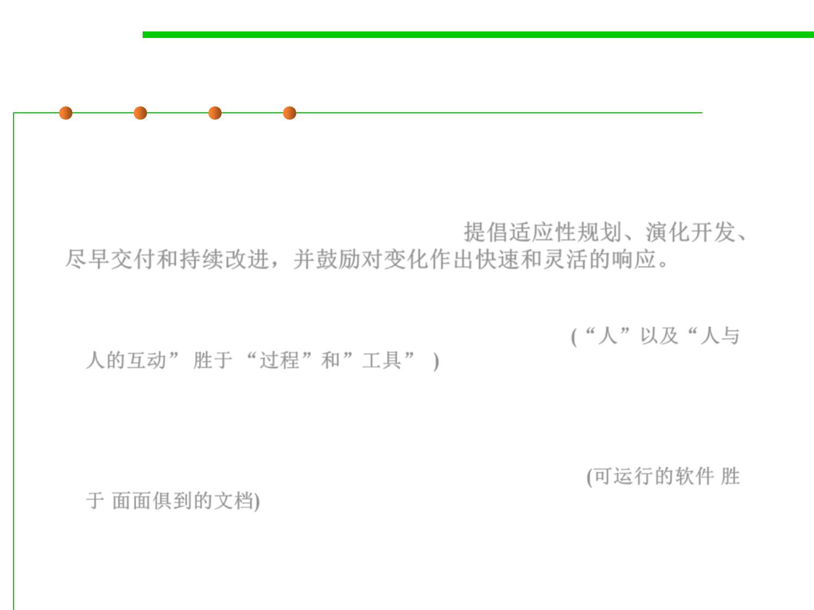

Agile development
2.1 Software Lifecycle and Configuration Management
▪ It advocates adaptive planning, evolutionary development, early
delivery, and continuous improvement, and it encourages rapid
and flexible response to change. Agile Manifesto was firstly coined
in 2001 by 17 famous “programmers”. 提倡适应性规划、演化开发、
尽早交付和持续改进，并鼓励对变化作出快速和灵活的响应。
– Individuals and Interactions over processes and tools (“人”以及“人与
人的互动” 胜于 “过程”和”工具” )
• Self-organization and motivation are important, as are interactions like co-
location and pair programming.
– Working Software over comprehensive documentation (可运行的软件 胜
于 面面俱到的文档)
• Working software is more useful and welcome than just presenting documents to
clients in meetings.